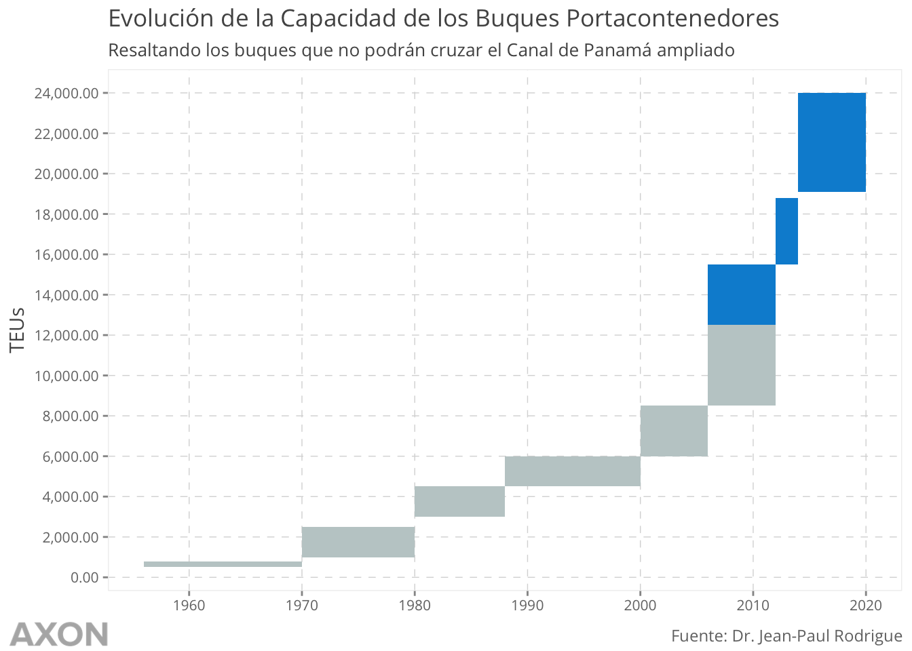
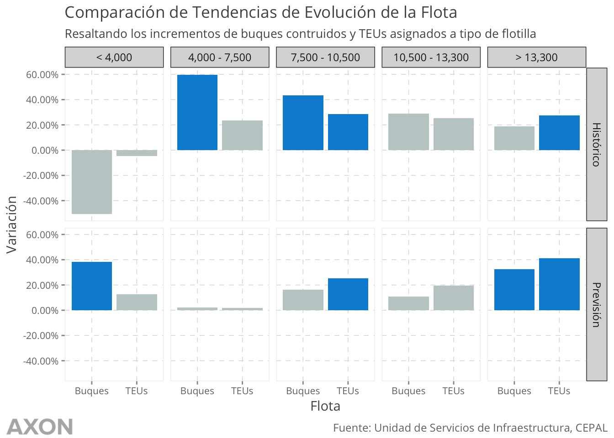

1 Contexto
A continuación describiremos la evolución de 4 factores que nos ayudarán a entender de mejor manera el mercado de contenedores. Estos factores son:
- Evolución del Comercio Mundial
- Evolución del Comercio Marítimo
- Evolución del Comercio Contenerizado
- Evolución del Tamaño de los Buques de Contenedores
1.1 Evolución del Comercio Mundial (1960-2015)
El comercio mundial ha sufrido dos etapas de “globalización”1. El primer periodo de globalización inicia en el siglo XIX, en este periodo se realizan grandes adelantos en tecnologías de comunicación (telégrafo) y transporte marítimo (barcos de vapor, Canal de Suez). Este periodo finaliza con la Primera Guerra Mundial, en donde ni Inglaterra ni EEUU quisieron tomar el liderazgo para la recuperación de la economía lo que culmina con la Gran Depresión en los años 30.
La segunda etapa inicia en los años 50 y es esta etapa la que se analizará a continuación.
El comercio puede ser medido directamente o indirectamente. La medición directa sería el cálculo de todas las exportaciones del mundo para cierto periodo, el problema con este enfoque es que puede existir duplicidad debido al crecimiento en complejidad de las cadenas logísticas.
Hoy en día es muy común que un producto final sea manufacturado en varias etapas en distintas partes del mundo. Por ejemplo, si hiciésemos un reloj hace 50 años en China y fuese exportado a otros países por $500 el valor total de comercio serían efectivamente esos $500. Con las cadenas logísticas actuales, las partes primarias se realizarían en China por un monto de $400, luego serían transportadas a otro lugar en el mundo donde se le daría un valor agregado de $100 y se exportaría a otras partes del mundo por un valor de $500. Si sumamos los dos valores obtenemos un total de comercio de $900.
La forma indirecta para medir el comercio sería utilizar el porcentaje que este representa del Producto Interno Bruto (PIB). En la figura 1.1 podemos apreciar el porcentaje del PIB mundial que es explicado por el comercio de mercancías. En donde se observa que a partir de 1994 el comercio empieza a ganar importancia en cuanto al porcentaje que explica del PIB mundial. En los años 2008, 2011 y 2012 supera la barrera del 50% del PIB.
Figura 1.1: Porcentaje del PIB mundial explicado por el comercio
Ahora, en la figura 1.2 vemos el porcentaje del comercio que es explicado por el PIB de cada país para los años; 1960, 1970, 1980, 1990, 2000 y 2015. Esta gráfica refleja que a pesar de que la importancia del comercio de mercancía varía para cada país en distintos puntos de la historia, los países están dependiendo cada vez más de ella. Podríamos decir, haciendo uso de la leyenda, que el mundo se está volviendo más azul con el tiempo.
Figura 1.2: Porcentaje del PIB explicado por el comercio en el mundo, visto en distintas epocas
En la tabla 1.1 vemos el intercambio entre las regiones GEO32 para el año 2015 y nos enfocamos en el top 10, observamos que tanto EEUU y el área de NW Pacific and East Asia reportan un flujo importante de comercio. $978 billones y $946 billones respectivamente. Este intercambio comercial es el más importante en términos de la Factibilidad del Corredor Interoceánico y será explorado a mayor detalle.
| Reporter | Partner | Trade in Billion US$ |
|---|---|---|
| US | NW Pacific and East Asia | $978 |
| Western Europe | Central Europe | $957 |
| NW Pacific and East Asia | US | $946 |
| Western Europe | NW Pacific and East Asia | $936 |
| Central Europe | Western Europe | $931 |
| NW Pacific and East Asia | Western Europe | $927 |
| NW Pacific and East Asia | Southeast Asia | $897 |
| US | Western Europe | $778 |
| Western Europe | US | $774 |
| US | Meso-America | $584 |
1.2 Evolución del Comercio Marítimo
Ha evolucionado a lo largo del tiempo en conjunto con distintas innovaciones tecnológicas. Dentro de las más importantes se encuentran las relacionadas a la comunicación y el transporte marítimo. La primera etapa de la globalización vino acompañada por la invención del telégrafo y las naves impulsadas a vapor.
Actualmente el costo de comunicación ha disminuido considerablemente, así como los costos de carga marítima, en comparación a los precios de los años ’30. Todo esto se debe a los avances que se han realizado a lo largo del tiempo en estos campos.
Al momento no se cuenta con datos directos para poder realizar la estimación de qué porcentaje del comercio mundial es realizado a través de la infraestructura marítima. De forma indirecta podemos estimar a través de distintas fuentes que la participación del transporte marítimo asciende al 90%. Algunas de las fuentes que declaran esto son International Maritime Organization, International Chamber of Shipping, la sección de negocios de las Naciones Unidas, La revista Smithsonian sin especificar fecha.
De acuerdo al reporte Revision del Transporte Marítimo-2015 realizado por la UNCTAD3, el 80% del volumen de comercio mundial y el 70% del valor fue transportado por mar y manejado en puertos en todo el mundo. Estos números son un claro indicativo de que esta vía de transporte es la espina dorsal del comercio mundial. En la figura 1.3 al observar el comercio total realizado por esta vía observamos que ha crecido en un 400% en el periodo 1970-2015. Una clara tendencia al alza. En este caso cabe resaltar que el volumen transportado en el año 2015 no se vió afectado por la disminución del PIB mundial en ese año. Algo que se pudo haber esperado, a juzgar por la depresión que se observa en el comercio marítimo en el año 2009 y la disminución que se observa en el PIB mundial en la figura 1.1.
Figura 1.3: Evolución del comercio maritimo en el tiempo
El movimiento marítimo de mercancías puede ser segmentado en 3 categorías:
- Petróleo Crudo
- Productos del petróleo y gas
- Carga seca
En donde el crecimiento del comercio marítimo se debe al aumento de carga seca según la gráfica 1.4. Dentro de la carga seca se encuentran los productos que son transportados utilizando contenedores. Este segmento del mercado es el que compete a este estudio.
Figura 1.4: Crecimiento del comercio marítimo segmentado por tipo de carga
1.3 Evolución del Comercio Contenerizado
La historia del contenedor moderno comienza en 1949, cuando el ingeniero Keith Tantlinger contribuye en su desarrollo, manejo y equipo para transporte. Luego en 1955 Malcom Maclean forma la empresa de naves de contenedores conocida como Sea-Land, llevándose a Tantlinger para que trabajara con él. Luego entre 1968 y 1970 se publicaron los estándares ISO por la Organización Marítima Mundial (IMO por sus siglas en ingles).
El desarrollo de esta industria otorgó las siguientes ventajas4:
- Estandarización del transporte de productos:
- Flexibilidad de uso
- Administración
- Economías de Escala
- Velocidad
- Almacenamiento
- Seguridad
En 1980 el porcentaje de la carga seca transportada por contenedores era del 5%. A partir de esta fecha fue aumentando hasta llegar a un 23% en el año 2014. Este aumento de participación vino acompañado con la construcción de naves especializadas para el transporte de contenedores y la consecuente adaptación de las operaciones portuarias alrededor del mundo.
Podemos inferir que aunque el porcentaje en volumen sea menor en comparación a otros tipos de carga seca, este segmento del mercado transporta un alto porcentaje del valor del comercio mundial. La mayoría de carga de valor que es transportada por contenedores son productos transformados. En ellos se transporta; ropa, computadoras, televisores, celulares, comida transformada, etc.
Figura 1.5: Porcentaje de participación del mercado de contenedores en la categoría de carga seca
1.4 Evolución del Tamaño de los Buques Portacontenedores
| Generación | Nombre | Eslora | Manga | Calado |
|---|---|---|---|---|
| Primera | Early | 137 | 17 | 9.0 |
| Segunda | Fully Cellular | 215 | 20 | 10.0 |
| Tercera | Panamax | 250 | 32 | 12.5 |
| Cuarta | Post Panamax I | 300 | 40 | 13.0 |
| Quinta | Post Panamax II | 340 | 43 | 14.5 |
| Sexta | Post Panamax III | 397 | 56 | 15.5 |
| Septima | VLCS | 400 | 59 | 15.5 |
| Octava | ULCS | 430 | 62 | 16.0 |

1.4.1 Evolución de la Flota de Buques Portacontenedores


En el reporte “World Trade Report 2013”, realizado por la World Trade Organization (WTO), se realiza una descripción detallada de estas dos etapas de la globalización en la sección B.↩
GEO3 se refiere al reporte “Global Enviroment Outlook 3, 2002” reportado a las Naciones Unidas, Esta información es agregada en la base de datos de COMTRADE. En este reporte agrupan a los países en distintos grupos para analizarlos. Esta clasificación es conveniente para analizar los tránsitos comerciales ya que aísla a economías de interés en un solo grupo y las más importantes son analizadas individualmente. Por ejemplo, Estados Unidos es analizado individualmente↩
UNCTAD: United Nations Conference on Trade and Development↩
Según publiación de (Jean Paul Rodrigue)↩